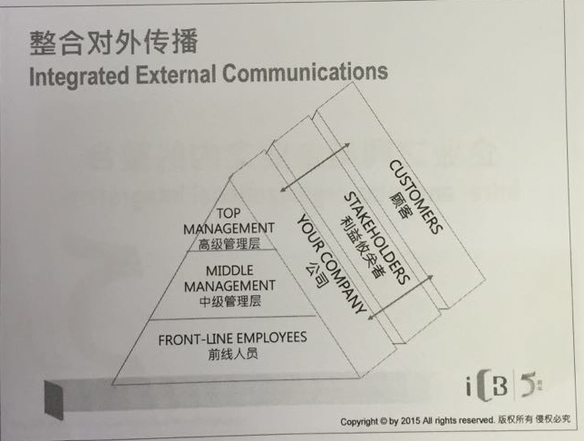

营销是什么
营销：个人及团体通过互相创造及交换产品与价值来各取所需的社会及管理过程。
双向的过程： 你需要产品，我需要钱
包装最朴实的本质是保护产品
营销的组成部分
- 消费者价值 产品使用前及使用后的分别，是一种满足感。包括有生理、心理、空间、经济、社会等各方面。
- 交易 提供别人所需以换取己方利益
- 营销是一种双赢关系--各方皆得利益
- 每一项交易都是一次经验，经验积累会对满足感带来增减
- 经验补单受本品牌影响，也同时被与竞争者品牌的消费经验影响
- 不同客户要求不一，所追求的价值不一，经验也不一
- 由此诞生 目标营销（target marketing）
目标营销
- 针对客户特点，及企业本身资源，针对不同客户的细分（segmentation）来提供最适合的营销手法至双赢目标
- 客户细分的描述
- 地理
- 人文
- 心理
- 细分的标准--需求：行为(behaviors)，购买目的(Motivation)
市场细分的基础在需求，不同细分群体之间一定是有需求上的分别，如果需求一样就不必做细分。
当需求有分别，能推动他们的购买作决定的原因自然会有分别，传递信息有分别，竞争者有分别，使用的营销技巧，执行上都有分别。
由于群体细分了，讯息到达率会更好更有相关性，成功达成销售的几率有所提升，浪费减少，销售增长，成本降低，利润就会改善。
Need Scope (Taylor Nelsen)
以购买的推动力来做细分
消费者需求
- 功能需求：味道，保证大小，服务等
- 身份需求：朋辈认可，社会地位，生活形态
- 感性需求：消费者所追求的感受及个性
品牌形象
- 符号象征：品牌性格
- 社会价值
- 产品特质
- 符号象征：品牌性格


客户细分和相应的策略
- 忠诚客户：保留 （Retention）
- 摇摆客户：唤醒 （Re-activation）
- 新兴客户：吸引 （Acquisition）
- 竞争者客户：赢回 （Win Back）
4A+1R 模型
从高到低5个层次
- Advocate 拥戴者： 与品牌有共鸣，推进别人使用
- Adorer 仰慕者：长期是品牌的支持者，一直使用
- Adopter 使用者：每隔一阵子总会使用品牌
- Acceptor 接受者：喜欢品牌，将来或会使用
- Rejecter 抗拒者：不喜欢，不满品牌，批评品牌
营销的观点和整合营销的观点

整合营销传播：传统概念
IMC是营销传播计划的理念，它增加了计划的附加价值。对不同传播推广工具的策略功能（如一般的广告、直接回复、促销、公关等）做出评估并组合以提供清晰、统一及最大的传播效果。整合营销传播：策略观点
IMC是管理客户关系以发展品牌价值的过程。
精确的说是鼓励跨功能的，由数据支持发展的讯息并通过双向的沟通过程来创造和培养与客户和利益攸关者的互利关系
| 阶段 | 内容 |
|---|---|
| 传播 | 活用多中媒体及接触点的双向沟通 |
| 营销 | 消费者/客户需要及切身的信息、利益、达到双方共赢 |
| 整合 | 策略安排时序，信息内容，媒体使用 |
整合营销的五大主题
- 由客户或潜在顾客出发（Start with the customer or prospect），在更细分的市场整合营销
- 影响行为，在时间和各层面上整合消费者行为
- 使用所有接触方式，整合媒体及各种传播机会
- 达到协同效应，在所有传播工具整合一致的品牌讯息
- 建立关系，在品牌和客户间建立长远的功能和感性的联系
品牌一致性
- 企业可能会使用不同的媒体来吧独特的讯息传递给个别的目标受众，但必须要确保这些讯息与品牌本身的目标、价值和个性一致，不会引起冲突
- 任何媒体都有可能成为恰当的传播工具
- 每个媒体可被视为独立的（个别的表现），同时也应被看作是整体的其中一部分（如何贡献已达至整个企划的共鸣）
- 相比于漂亮的推广手法，伟大的品牌意念才是真正的品牌推动力。
营销是从外到内的理念
传播是从内到外的过程
多方整合到整合的执行
整合对外传播
企业使用了所有的资源，要求所有人参与跟顾客和利益攸关者的全方位沟通

客户在手就是价值
- 现有客户的成本较低，提供较高收益
- 忠诚客户是：
- 较不注重价格
- 需要较少关注
- 愿意购买更多
- 可以推介更多客户
服务有利可图的客户
利益攸关者（stakeholders）

从社会化媒体找到意见领袖
意见领袖对传播很重要
创新者对营销很重要
整合（内部）垂直传播
首席执行官也是首席传播官（The CEO is CCO）
- 最主要是传播企业的愿景
- 愿景：为客户增值，提供整个企业的一个焦点和目标
- 这些愿景需要与企业维护的价值观
- 将价值观转换成清晰的品牌承诺，并与利益攸关者和客户做成沟通
- 是其他员工的典范
- 把企业努力集中在有限数量的突破性目标，能够清晰地传播出去是成功的关键
经济成果的来源


整合平行传播是整合传播的中心（Heart）
- 从外而内，逐步将顾客的需要传达给每一个部门，让每一个部门知悉顾客的需要
- 透过开放各部门、业务单位和地域的沟通。将企业的技术、资产和工序连系及加强起来
- 有效的团队合作是整合的核心，这帮助不同领域的专家、地区和级别的人士更好的共同分享信息与合作
整合传播需在整个企业内外（对外传播）、不同职别（内部垂直传播）、以及不同功能，不同业务单位和不同地域内（内部平行传播）进行。
IMC元素